Wide Residual Networks
arXiv: 1605.07146v4
法国
Abstract
深度残差网络被证明能够扩展到数千层，不断的提高性能。
但是，精度提高的每一小部分都要增加近一倍的层数，而训练很深的残差网络有一个特征重用递减（diminishing feature reuse）的问题，这使得这些网络的训练速度非常慢。
为了解决这些问题，本文对 ResNet block 的架构进行了详细的实验研究，在此基础上，提出了一种新型的架构，即减少深度，增加残差网络的宽度（ decrease depth and increase width of residual networks. ）。
本篇论文提出的网络被称为 wide residual networks (WRNs)，实验证明，一个简单的 16 层深的 WRN，精度和效率上优于以前所有的深残差网络，包括千层深网络。
WRN 在 CIFAR、SVHN、COCO 数据集上取得 SOTA。
1 Introduction
卷积神经网络在过去几年中，层数逐渐增加：AlexNet，VGG，Inception，ResNet。
训练深度神经网络存在几个困难，包括梯度爆炸/消失和网络退化（exploding/vanishing gradients and degradation.）。训练深层的神经网络有如下技巧：
- well-designed initialization strategies
- better optimizers
- skip connections
- knowledge transfer
- layer-wise training
最近的 ResNet 在 ImageNet、CIFAR、PASCAL VOC、MS COCO 上取得了 SOTA。与 Inception 架构相比，ResNet 表现出了更好的泛化能力，这意味着特征可以在迁移学习中被利用，效率更高。
研究表明，残差连接加快了网络的收敛。
Highway Network 在 ResNet 之前被提出，Highway Network 中的残差链路是门控的，这些门的权重是可学习的。
到目前为止，对残差网络的研究主要集中在 ResNet 块内的激活顺序和残差网络的深度上。本篇论文的的工作是探索一套更丰富的 ResNet 块的网络架构，并彻底研究除了激活顺序之外的其他几个不同方面如何影响性能。
Width vs depth in residual networks.（残差网络的宽度与深度）
残差网络的作者试图将网络尽可能地做得更薄，而倾向于增加其深度和更少的参数，甚至引入了一个”瓶颈“块（«bottleneck» block），使得 ResNet 块更薄。
作者们注意到，带有恒等映射（identity mapping）的残差块可以训练非常深的网络，这这是残差网络的优点，同时也是一个弱点。由于梯度流经网络时，没有什么东西可以强迫它通过残差块权重，它可以避免在训练过程中学习任何东西，所以有可能只有少数几个块可以学习到有用的表征，或者很多块共享的信息非常少，对最终目标的贡献很小。这个问题被称为递减特征重用（diminishing feature reuse），（Deep networks with stochastic depth）试图用在训练过程中随机禁用残差块的想法来解决这个问题。
这篇论文建立在 “Identity mappings in deep residual networks” 之上，试图回答深度残差网络应该有多宽的问题，并解决训练中存在的问题。
实验表明，与增加残差网络的深度相比，拓宽 ResNet 块提供了一种更有效的方法来提高残差网络的性能。wider deep residual networks 比 ResNet 有显著的性能提升，层数减少了 50 倍，速度快了 2 倍以上。
wide 16-layer deep network 与 1000-layer thin deep network 的精度相同，参数数量也相当，不过前者训练速度要快几倍。这暗示了深度残差网络的主要力量在残差块，深度的影响是辅助性的。
**Use of dropout in ResNet blocks. **
Dropout 较多应用于参数较多的顶层，以防止特征共适应和过拟合。
后来，dropout 被 Batch normalization 代替，BN 的网络比有 dropout 的网络能达到更好的精度。（Batch normalization: Accelerating deep network training by reducing internal covariate shift.）
kaiming He 研究表明，在 ResNet 中引入 dropout 会产生负面的作用。在宽残差网络（WRN）上的实验结果表明，引入 dropout 后，在一些数据集上取得了 SOTA。
本篇论文的贡献总结如下：
- 对残差网络架构进行了详细的实验研究，彻底研究了 ResNet 块结构的几个重要方面。
- 提出了一种 widened architecture for ResNet blocks，使残余网络的性能得到显著提高。
- 提出了一种在深度残差网络中利用 dropout 的新方法。
- WRN 在几个数据集上取得 SOTA。
2 Wide residual networks
恒等映射的残差块表示如下：
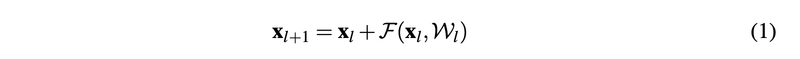
- 其中 $x_{l+1}$ 和 $x_l$ 为网络中第 $l$ 个单元的输入和输出，$F$ 为残差函数，$W_l$ 为块的参数。残差网络由依次叠加的残差块组成。
残差网络由两种类型的块组成：
（1）basic：用两个连续的 3×3 卷积与批量归一化、ReLU 前面的卷积：conv3×3-conv3×3 图 1(a)
（2）bottleneck：有一个 3×3 卷积，前后有降维和扩展的 1×1 卷积层：conv1×1-conv3×3-conv1×1 图1(b)
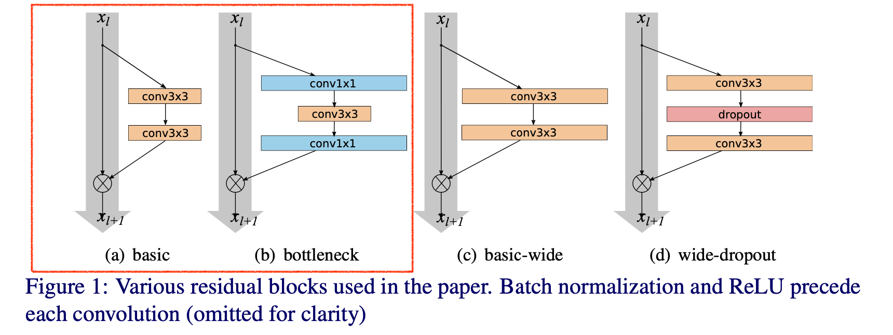
与原架构（Deep residual learning for image recognition）相比，在（Identity mappings in deep residual networks）中，将 batch normalization、activation、convolution 的顺序由 conv-BN-ReLU 改为 BN-ReLU- conv。后者被证明训练速度更快，取得了更好的效果。
所谓的 ”bottleneck block“ 最初是用来使 block 的计算成本降低，以增加层数。由于本篇论文要研究加宽的效果，而 ”bottleneck block“ 是用来让网络变薄的，所以不考虑它，而是关注 ”basic block“ 的残差架构。
有三种简单的方法可以提高残差块的表示力。
- to add more convolutional layers per block
- ✅ to widen the convolutional layers by adding more feature planes
- to increase filter sizes in convolutional layers
引入两个参数：
- deepening factor l：l 表示一个区块中的卷积数。
- widening factor k：k 倍的特征数量（特征图的片数，即卷积核的个数）
因此，ResNet baseline 中的 ”basic block“ 对应的是 l＝2，k＝1。图 1(a) 和图 1(c) 分别显示了 «basic» 和 «basic-wide» blocks。
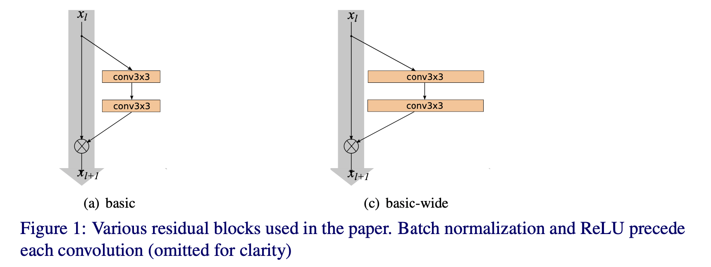
WRN 结构如 Table 1 所示：
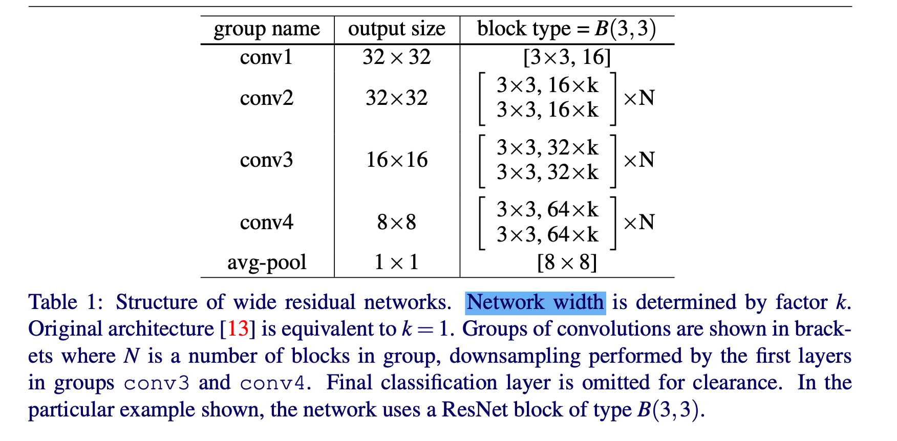
它由一个初始卷积层 conv1 组成，之后是 3 组（每组大小为 N）残差块 conv2、conv3 和 conv4，然后是平均池和最终分类层。
在所有的实验中，conv1 的大小都是固定的，而引入的加宽因子 k 则对 3 组 conv2-4 中的残差块的宽度进行了缩放（例如，原来的 ”basic“ 架构相当于 k=1）。
2.1 Type of convolutions in residual block
让 B(M) 表示残差块结构，其中 M 是一个列表，其中有块中卷积层的核大小。
例如，B(3, 1) 表示具有 3×3 和 1×1 卷积层的残差块。请注意，由于我们不考虑前面解释的 “瓶颈 “块，所以在整个块中，特征平面的数量始终保持不变（所有 block 中，使用卷积核的数量相同）。
论文想要研究的是，”basic block“ 残差架构的 3×3 卷积层中的每一个层的重要程度，是否可以用计算成本较低的 1×1 层，甚至是 1×1 和 3×3 卷积层的组合来代替。例如，B(1,3) 或 B(1,3)。这可以增加或减少块的表示能力。
因此，试验了以下组合（注意，最后一个组合，即 B(3,1,1) 与Network in Network 架构相似）。
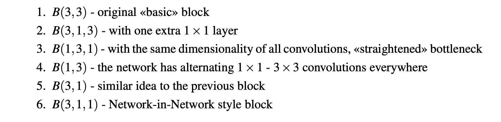
2.2 Number of convolutional layers per residual block
还对区块加深因子 l 进行实验，看看它对性能的影响。比较必须在参数数量相同的网络中进行，所以在这种情况下，需要在确保网络复杂度保持大致不变的情况下，构建不同 l 和 d（其中 d 表示块的总数量）的网络。例如，这意味着只要 l 增加，d 就应该减少。
2.3 Width of residual blocks
While the number of parameters increases linearly with l (the deepening factor) and d (the number of ResNet blocks), number of parameters and computational complexity are quadratic in k.
参数量随着 l（加深因子）和 d（ResNet 块数）的增加而线性增加，但参数量和计算复杂度是 k 的平方。
关于更宽的残差网络的一个论点是，在残差网络之前，几乎所有的架构，包括最成功的 Inception 和 VGG，与 ResNet 相比都要宽很多。例如，残差网络 WRN-22-8 和 WRN-16-10 在宽度、深度和参数数量上与 VGG 架构非常相似。
WRN-n-k：n 为总的卷积层数；k 为widening factor。
for example, network with 40 layers and k = 2 times wider than original would be denoted as WRN-40-2.
2.4 Dropout in residual blocks
BN 虽然有正则化的效果，但是其需要大量的数据增强。
图 1(d) 所示，在每个残差块之间的卷积和 ReLU 之后增加一个 dropout 层，以扰动下一个残差块中的批归一化，防止其过拟合。在很深的残差网络中，应该有助于处理在不同残差块中强制学习的递减特征重用问题。
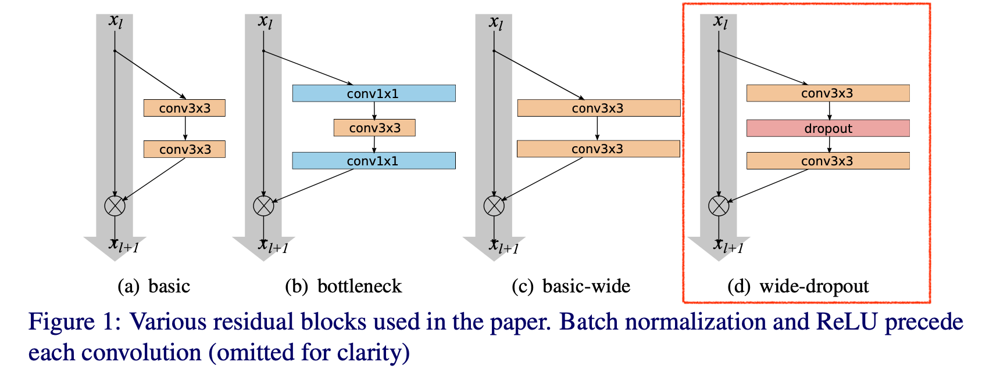
3 Experimental results
（1）Type of convolutions in a block
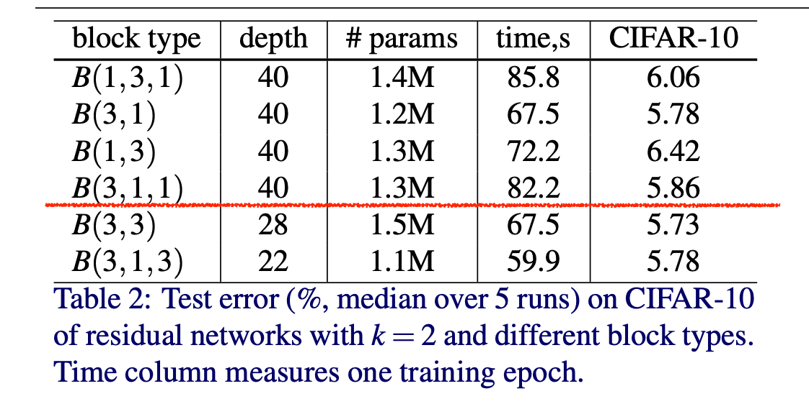
B(3,3) 是最好的，B(3,1) 和 B(3,1,3) 在精度上非常接近 B(3,3)，因为参数少，层数少。B(3,1,3) 比其他的快一点。
（2）Number of convolutions per block
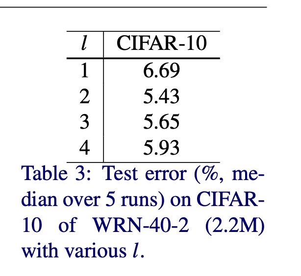
B(3,3 )结果最好，而 B(3,3,3) 和 B(3,3,3,3) 的性能最差。
B(3,3) 在每个块的卷积数方面是最优的，因此，在接下来的实验中，只考虑 B(3,3) 类型的块的 WRN。
（3）Width of residual blocks
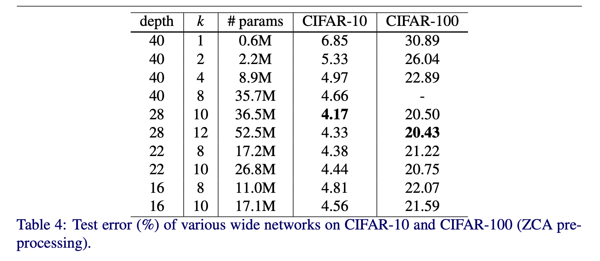
当试图增加加宽参数 k 时，就必须减少总层数。为了找到一个最佳比例，在 k 从 2~12，深度从 16~40 的情况下进行了试验。结果如 Table 4 所示。
K = 8 时，depth 分别是 16、22、40，错误率 4.56%、4.38%、4.66%，有一个先下降，再上升的过程。
compare thin and wide residual networks.
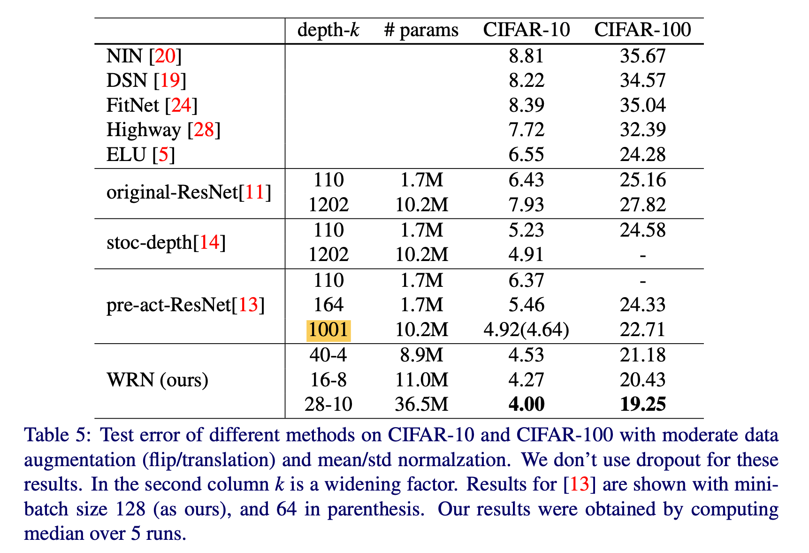
WRN-28-10 在 CIFAR-10 上的表现比 ResNet-1001 要好 0.92%，在 CIFAR-100 上的表现比 ResNet-1001 要好 3.46%，层数少了 36 倍。
WRN-28-10 和 WRN-40-10 的参数分别是 ResNet-1001 的 3.6 倍和 5 倍，分类错误率明显低于 ResNet-1001。
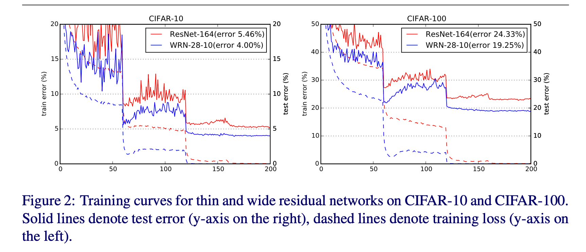
（4）Dropout in residual blocks
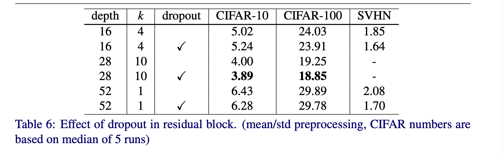
略，实验结果直接看论文效果更好。
笔记只记录背景和原理就好。